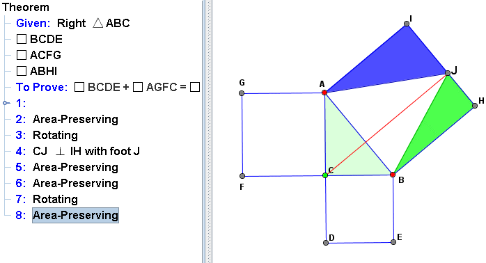

JGEX tries to help the user (reader) in reading a proof of a theorem in geometry and in identifying geometry elements in the proof text with their counterparts in the diagram(s). To realize this goal, beside the main features of our approach – the dynamic diagram and the interrelationship between textual geometry facts and those in the related diagram(s) in a dynamic way, we propose some general dynamic visual features to realize the main features. They include, but are not limited to
1. The proof text created by the program (either manually or automatically) is readable, similar to proofs in geometry textbooks. The reader can understand the proof by reading it step by step.
2. The displays of the proof text and the geometry diagram of the theorem are separated, but are internally related. By clicking a step or a part of the proof text, the corresponding geometric elements in the diagram respond with various dynamic visual effects. Although these effects do not have the exact semantics of their corresponding proof text, they intend to reflect the meaning of the proof text.
3. The visual effect varies depending on the contents of each step. The detail of the visual effects in JGEX will be covered in section 3.2.
4. The proof is hierarchically organized, e.g., under a main step there might be substeps. Under each substep, there might be further substeps, and so on. In some cases, organizing a proof hierarchically is closely related to applications of lemmas in mathematical proofs. Generally the arrangement as substeps or lemmas are subjective and it does not have a formal semantics.
5. By clicking a main step, its substeps (if any) shrink to just this main step and when it is clicked again, it will expand back to the original form. This allows the user to concentrate on top-level (main) steps, and when needed, to look at their substeps.
6. By clicking a terminal substep (i.e., a substep without further substeps), it might pop another windowpossibly with a geometry diagram in animation to further explain this substep. This process can be nested with the hypertext technique.
7. If a step uses an assertion proved in a previous step, clicking this step causes the previous step to be highlighted. In this way, it’s much easier for the user to find the related step. The reading of the proof would be much easier, especially for complicate theorems.V8. Additional dynamic visual effects other than listed above. Proofs in geometry can have more imaginative dynamic visual effects than proofs in other branches of mathematics.
Generally, for a relatively complicated human proof, a substantial amount of work and imagination
is needed for converting it into a visually dynamic representation of the proof. It is much harder to
develop a general tool so that the creation of visual presentations can be done easily. This tool has
been implemented in JGEX and is the main theme of this paper.
 |
The above example is a manually created proof for pythagoras theorem. Please read Pythagoras Theorem for the detail constructing of this proof.
See Also:
JGEX Help